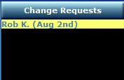

Change Requests
All change requests are displayed on the right side of the home page. Those highlighted in yellow
are requests which have not been responded to. When a member submits a change request,
they can cancel the request if the corresponding entry under "My Schedule
" has a red "X" through
the double arrow.
All members with the same role defined in their profile, other than the one who submitted the
request, will see a green check mark to the right of the text, click on this to request that you want
to take that person's place.
Once someone clicks on the green check mark, the entry will be highlighted in green and will
remain that way until the administrator (usually the worship leader/director) either approves or
rejects the change.
*** Depending on the role, the approval process changes. Some roles will allow you to change
with no administrator approval required.
